TODO: short introduction about how/where we will be using these datasets throughout book.
2.1.1 Quantiative Response: High School Test Scores
The high school dataset contains demographic and standardized test score information for 200 students. There is no single target variable, but we will use this dataset to attempt to predict quantitative response values, like reading scores, given all other information.
ID Gender SES SchTyp ProgTyp
Min. : 1.00 female:109 high :58 private: 32 academic:105
1st Qu.: 50.75 male : 91 low :47 public :168 general : 45
Median :100.50 middle:95 vocation: 50
Mean :100.50
3rd Qu.:150.25
Max. :200.00
Reading Writing Math Science SocStud
Min. :28.00 Min. :31.00 Min. :33.00 Min. :26.00 Min. :26.0
1st Qu.:44.00 1st Qu.:45.75 1st Qu.:45.00 1st Qu.:44.00 1st Qu.:46.0
Median :50.00 Median :54.00 Median :52.00 Median :53.00 Median :52.0
Mean :52.23 Mean :52.77 Mean :52.65 Mean :51.85 Mean :52.4
3rd Qu.:60.00 3rd Qu.:60.00 3rd Qu.:59.00 3rd Qu.:58.00 3rd Qu.:61.0
Max. :76.00 Max. :67.00 Max. :75.00 Max. :74.00 Max. :71.0
HonorsProg Awards
enrolled : 53 Min. :0.00
not enrolled:147 1st Qu.:0.00
Median :1.00
Mean :1.67
3rd Qu.:2.00
Max. :7.00
The data contain 12 variables overall, of which four are categorical. However, we will note now that one of the variables is statistically uninformative: see the ID variable in the summary above. One should always examine data that have been entered and be prepared to remove uninformative variables, which we can do by, e.g., running the following code:
TBD: pointer to dplyr material. For more information on this dataset, see, e.g., the documentation for the hsbdemo() function of R’s glsm package.
2.1.2 Categorical Response: Heart Disease Data
The heart disease dataset contains demographic and medical information about 270 patients, with the nominal target variable being Disease (which is either Absent or Present).
Gender SES SchTyp ProgTyp Reading
female:109 high :58 private: 32 academic:105 Min. :28.00
male : 91 low :47 public :168 general : 45 1st Qu.:44.00
middle:95 vocation: 50 Median :50.00
Mean :52.23
3rd Qu.:60.00
Max. :76.00
Writing Math Science SocStud
Min. :31.00 Min. :33.00 Min. :26.00 Min. :26.0
1st Qu.:45.75 1st Qu.:45.00 1st Qu.:44.00 1st Qu.:46.0
Median :54.00 Median :52.00 Median :53.00 Median :52.0
Mean :52.77 Mean :52.65 Mean :51.85 Mean :52.4
3rd Qu.:60.00 3rd Qu.:59.00 3rd Qu.:58.00 3rd Qu.:61.0
Max. :67.00 Max. :75.00 Max. :74.00 Max. :71.0
HonorsProg Awards
enrolled : 53 Min. :0.00
not enrolled:147 1st Qu.:0.00
Median :1.00
Mean :1.67
3rd Qu.:2.00
Max. :7.00
The data contain 14 variables overall, with exactly half being quantitative and half being categorical. For more information on what the variables represent, see the data card on the the Kaggle webpage where these data are hosted. (Note that we have changed the values for some of the variables to be, e.g., explicitly No/Yes instead of 0/1, etc. Also note that because Num.Vessels has numerical meaning - i.e., because it is an ordinal variable, one for whom the order of values matters - it has been left as a quantitative variable despite only having the values 0, 1, 2, and 3.)
2.1.3 All Qualitative Variables: Stellar Temperatures
Teff RA Dec Parallax
Min. :3664 Min. : 0.0043 Min. :-85.713 Min. : 0.1179
1st Qu.:4911 1st Qu.: 80.6802 1st Qu.: 9.583 1st Qu.: 0.6239
Median :5548 Median :131.7663 Median : 25.928 Median : 1.0460
Mean :5518 Mean :154.5872 Mean : 23.149 Mean : 1.4354
3rd Qu.:6018 3rd Qu.:231.4918 3rd Qu.: 39.772 3rd Qu.: 1.7423
Max. :8631 Max. :359.9147 Max. : 85.299 Max. :16.9419
PM.RA PM.Dec g b
Min. :-258.5010 Min. :-207.1520 Min. : 5.191 Min. : 5.776
1st Qu.: -5.9387 1st Qu.: -9.3328 1st Qu.:12.777 1st Qu.:13.207
Median : -0.9095 Median : -4.0930 Median :13.878 Median :14.322
Mean : -1.6585 Mean : -6.0106 Mean :13.831 Mean :14.302
3rd Qu.: 3.1290 3rd Qu.: -0.5092 3rd Qu.:14.983 3rd Qu.:15.481
Max. : 188.1720 Max. : 106.0590 Max. :18.809 Max. :19.448
r Gal.L Gal.B
Min. : 4.564 Min. : 0.03854 Min. :-89.23
1st Qu.:12.204 1st Qu.: 91.57640 1st Qu.:-16.91
Median :13.287 Median :163.15234 Median : 12.25
Mean :13.222 Mean :154.39329 Mean : 11.80
3rd Qu.:14.362 3rd Qu.:198.41551 3rd Qu.: 37.98
Max. :18.689 Max. :359.99939 Max. : 89.42
2.2 The Canonical Analysis Workflow
TODO: blurb
Data Pre-Processing: the act of extracting analyzable data (e.g., a structured data table) from unstructured sources (e.g., images, audio files, text, etc.), as well as the act of editing the data table to mitigate missing data
Exploratory Data Analysis: the act of visualizing the observed data–via, e.g., histograms, scatter plots, box plots, etc., etc.–so as to build intuition about them
Statistical Learning: the attempt to find meaningful structures in the data or to uncover relationships between elements of the dataset
Interpretation: what did you discover through your analysis?
2.3 Data Input
2.3.1 Importing Data
Before learning how to analyze data in R, we first must understand how to import it. While data can sometimes be imported from a webpage or through an R package, data is most commonly downloaded onto your computer and imported locally. When downloading data, it is best practice to store your data in either the same folder or a subfolder of the location of your script, as opposed to the Downloads folder. This allows for the use of relative paths instead of absolute paths, which makes collaboration much easier.
After downloading the data, open your script in RStudio/Positron and check your working directory by typing getwd() in the console. Does the listed file path match where your script is located? If needed, change the working directory by using setwd().
Now we can write code to import the data. Below, we import the high school test scores dataset (hs.csv), which is located in the data subfolder of our working directory. This can be done using read.csv().
read.csv() takes a number of optional arguments. stringAsFactors=TRUE converts character strings (text) into factors when importing the data frame. In the high school test scores data, there are several categorical variables that take a small number of values (e.g. school type, program type, honors program). Treating these variables as factors is good practice in downstream analyses. Other optional arguments include header, which can be set to TRUE if the file contains the names of the variables as its first line, and sep, which allows delimiters other than comma, such as semicolon, tab, or pipe. Type ?read.csv to see more optional arugments that may prove useful, especially when importing large or messy data.
Alternative file formats (e.g. .rds, .xlsx, .dta) can be imported using other functions, such as readRDS(), readxl::read_xlsx(), or haven::read_dta(). While these have their own optional arguments, the key step of specifying the correct file path to the data is the same.
2.3.2 Missing Data
In any given structured data table, there may be cells that are empty. These cells indicate data that are missing. For instance, perhaps we are trying to import the comma-separated-value file assigned to txt. The second element of the first row is missing, as is the first element of the second row. R, for instance, can still read this table, with NA (for Not Available) inserted as the data values.
It is important to note, however, that missing data are not always represented by empty table cells. For instance, as shown in df above, the person collecting the data may elect to use a particular value (like -99) to indicate missingness (and, perhaps, not document that choice!). We should always be careful to examine data during exploratory data analysis to see if there are particular values that appear strange (and perhaps over-represented). We can always convert these values to NA as we need to, as demonstrated in the code below.
df[df==-99]<-NAdf
x y z
1 1 NA 1
2 NA 2 2
3 3 3 NA
Additionally, missing values in imported data may not truly be missing. For example, in the names dataset below, it is likely fair to assume that Mia is an only child, meaning we can replace NA with 0.
The short explanation of why missing data matter is that statistical learning algorithms cannot run if there are missing table entries. Any observations with a missing value for a variable that is part of the algorithm will be omitted entirely. The picture below represents two measurements, \(x_1\) and \(x_2\), made for 12 objects. Both measurements are observed for 10 of the 12 objects. However, for one object, \(x_1\) is known, but \(x_2\) is missing. The value of \(x_2\) can therefore lie anywhere along the vertical orange line. Statistical learning algorithms will not “guess” where that \(x_2\) datum is to go.
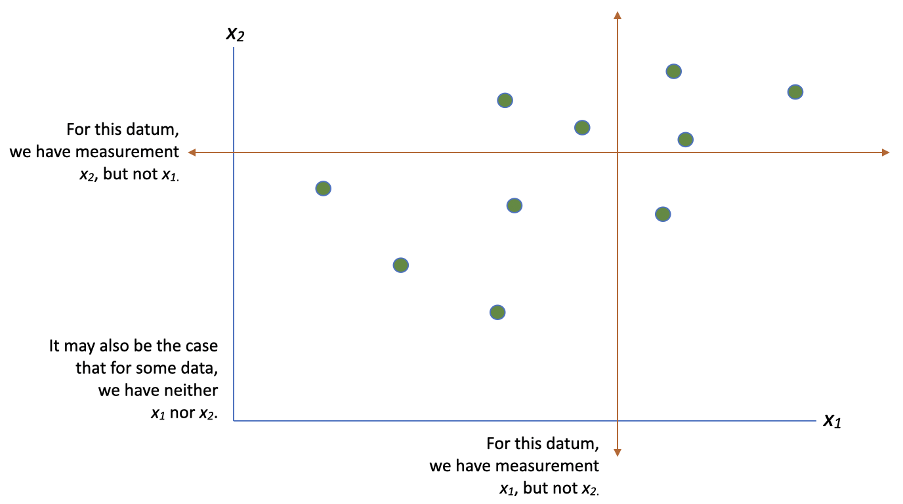
To solve the issue of missing data and complete downstream analyses, we have two options. The first is to remove rows and/or columns with missing data from the dataset prior to analyses. The second is to attempt to impute the missing data.
2.3.2.1 Removing data
Removal of data prior to analysis can be tricky in that there is no simple recipe to follow. For instance, say all the missing data in our dataset come from one variable. We might be tempted to remove that variable from our analysis. However, if the number of missing values in that variable is small, we might be tempted to simply remove those observations with missing data and retain the rest of the observations with complete data.
TODO: Paragraph on MCAR, MAR, MNAR
There are two primary considerations to keep in mind when trying to decide between removing observations versus removing variables:
When we remove observations, we reduce the overall sample size. This impacts the level of uncertainty in estimation. For example, if we are trying to estimate an average, recall that the variance of the mean is \(V[\bar{X}] = \sigma^2/n\), where \(\sigma^2\) is the population mean and \(n\) is the number of observations. The smaller the \(n\), the larger our variance, and the more uncertain we are about \(\bar{X}\).
When we remove variables, we may greatly impact the ability of any learned statistical model to make predictions. Or we may not. For instance, if we are trying to predict hospital costs for patients, removing the variable gender will have less of an impact on our accuracy than removing the variable age.
If the number of observations with missing data is relatively small, the safest initial approach is to remove those observations and proceed, regardless of the proportion of the variables for which the data are actually missing. But, if we have sufficient time and resources, we should always explore a variety of approaches. For instance, we could take out the observations with missing data and do an analysis and then separately only take out the variables with missing data and do an analysis. We could then compare the predictive abilities of the models.
2.3.2.2 Data imputation
Instead of removing data, we may also consider data imputation. Data imputation means using the known values in our dataset and background knowledge to estimate the missing data values. For instance, given our schematic picture of missingness above, we might think that, yes, there are certain regimes along the vertical and horizontal green lines where it would be more probable to observe data than others. Imputation is simply turning that intuition into an algorithm. However…
The idea of imputation is both seductive and dangerous. It is seductive because
it can lull the user into the pleasurable state of believing that the data are
complete after all, and it is dangerous because it lumps together situations
where the problem is sufficiently minor that it can be legitimately handled [via
imputation] and situations where standard estimators applied to the real and
imputed data have substantial biases.
- Dempster & Rubin (1983)
In other words, how do we know that we’ve put the data in “good places”, and how do we know that our attempt at imputation might not simply lead us down the road to biased results? Several procedures have been developed with the intent of avoiding biased results. As with most procedures, there are easy (but sub-optimal) approaches and more principled (but more computationally intensive) approaches.
The simplest approach of all is to determine the sample mean or median of the known data for the variable and use that value. The pro of this approach is that it is easy to implement and explain, while the con is that the imputed data are not distributed as the known data are. Instead, they only take one value.
To improve this approach, we could use a method known as hot-deck imputation. Let’s say that we have data on United States counties, but that the county’s unemployment rate is missing in some observations. With hot-deck imputation, we’d take an observation missing unemployment rate, look for the counties in our dataset with similar characteristics (e.g. similar population density, population size, region of county), pick of one of those counties, and then use that county’s unemployment rate as the imputed value. The way we pick which county can either be deterministic (the county with the closest matching attributes) or random (draw a random sample from the subset of counties with similar records). The approach is known as hot-deck imputation because hot refers to using the current dataset, as opposed to cold-deck, which relies on external data sources. The term deck comes from the idea of a deck of cards, where each “card” represents an observation (such as a county), and missing values are filled by drawing from similar observations within that deck.
While there are many more imputation alogorithms for various types of data, the last we will introduce here is Multiple Imputation by Chained Equations (MICE). The MICE procedure imputes missing values in a dataset through an iterative series of predictive models, where in each iteration, missing values for one variable are predicted using values from other variables in the dataset. Suppose we have a dataset with three variables (A, B, and C). The steps to perform MICE are as follows, and can also be implemented with the mice R package:
Choose the number of iterations k you will perform: Using five to ten iterations often works well in practice.
Initialize missing values: For each variable, temporarily replace the missing values with the mean or median of the observed values. At this stage, there are no missing values in the dataset.
Select a target variable for imputation: For variable A, for instance, change the imputed values back to missing.
Fit an imputation model: Regress A on the other variables (B and C), using only the rows where A is observed. Then use this model to predict and impute the missing values in A.
Repeat steps 3-4 for variables B and C as well, using the newly predicted values for A.
These are the steps for one of the k iterations. Each iteration begins using the dataset produced at the end of the previous iteration, which is where the chained part of the name comes from. With each iteration, the predicted values improve until some convergence point. MICE can be implemented not only for continuous variables, but also for binary, unordered categorical, and ordered categorical variables. We should, however, keep in mind that MICE requires the data to be missing at random. Additionally, the effectiveness of the method may wane with increased levels of missingness or at smaller sample sizes.
2.4 Data Wrangling
TODO: INSERT SECTION HERE: 6 main verbs, joining, pivoting
2.5 Exploratory Data Analysis
Exploratory Data Analysis (EDA) is the act of building intuition about observed data through visualization and statistical summaries. It is a critical component of any data analysis. Sometimes, research questions can be answered from EDA alone. For example, a histogram of exam scores can tell the professor how their class performed and whether a curve should be applied—no statistical learning model is needed. Oftentimes, however, EDA serves as a foundation for subsequent modeling and inference. Even when it is not sufficient to fully answer a research question, EDA is a necessary step in the data analysis process. In the words of American mathematician and statistician John Tukey,
The greatest value of a picture is when it forces us to
notice what we never expected to see.
EDA can reveal outliers, identify potential errors in the data, guide the selection of appropriate statistical learning methods, inform variable selection for predictive modeling, and generate hypotheses about relationships within the data. Jumping directly into modeling without first understanding the data can lead to misleading conclusions and poorly chosen methods.
So, if EDA is so important, how do we go about it? EDA is more of an art than a science. There is no single correct procedure, and the exact process will vary depending on our research goals and the nature of the data being analyzed. Nevertheless, we can outline a general framework that can be adapted to a wide range of scientific questions and applications. The steps are as follows:
Understand how the data is structured. Explore simple questions like:
How many variables and observations are there?
What are the variable types (e.g. numeric, categorical, date, logical)? Do we need to manually correct any of these types?
Understand relevant variables individually. Univariate visualizations and summaries help us explore the typical values that a variable will take. For each relevant variable, we recommmend creating summaries or graphs to answer questions such as:
For continuous variables: How is the variable distributed—unimodally or bimodally? Is it symmetric or skewed? What are the mix/max values for this variable, and do they seem reasonable?
For categorical variables: How many different values does this variable take? Are certain values more prevalent than others? Is than an unordered or ordered categorical variable?
Is this variable uninformative (e.g. a columns of 1’s) or does it take different values than we might expect?
Does the variable contain any missing values? If so, how many?
Explore relationships between variables. This step is particularly helpful for choosing an appropriate statistical learning model. Explore questions including:
Is there a visually apparently association between each relevant predictor variable and the response? Is this relationship linear or nonlinear? Strong or weak?
Are any of the predictor variables correlated with one another? If so, are they strongly correlated? Do they convey the same information?
For variables with missing values: Does it seem like the missingness is linked to the values of any other variables?
We now walk through how we go about answering these questions.
2.5.1 Introduction to ggplot2
In this book, we will use the ggplot2 R package for data visualization. The ggplot2 framework builds plots from composable elements, allowing for extensive customization. The image below shows the seven components used to create a visualization with ggplot2. Of these, the data, mapping,and layers components are required for every plot.
The first step to constructing a data visualization with ggplot2 is to specify the data by passing it into the ggplot() function. This stores the data to be used later by other parts of the plotting system.
ggplot(data=heart)
Next, we specify a mapping using aes() within the ggplot() function. Short for aesthetics, this describes how variables in the data are connected to visual properties of the plot. For example, if want Age to map to the x-coordinates and BP to the y-coordinates, we’d state that as follows:
ggplot(heart, mapping =aes(x= Age, y=BP))
The last required component for creating a plot are the layers, which take the mapped data and represent it in a way that humans can understand. Every layer consists of a geometry, which determines how the data are displayed (e.g. as points, lines, curves).
Using the code below, we have created our first complete data visualization! The layer geom_point() specifies that each observation should be displayed as a point. Notice that geom_point() is added to the data and mapping components using +. A common mistake when creating visualizations with ggplot2 is to use a pipe (|> or %>%) in place of a +. Just remember, once you start the initial gglot() call, all components become connected with a +.
ggplot(heart, aes(x= Age, y=BP))+geom_point()
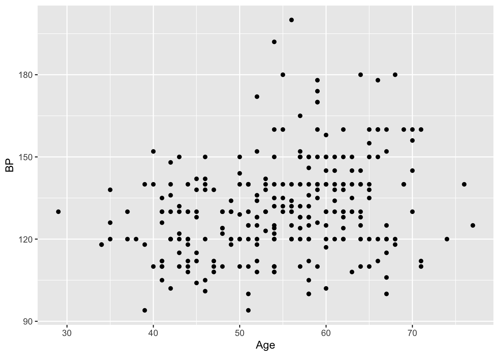
We now introduce what we consider as bonus components. These components have default settings in order to allow the user to build plots more efficiently, which is what makes them not required. However, knowing how to modify them can greatly enhance the clarity of your visualizations.
The first of these components is scales. Scales may be responsible for updating the limits of a plot, setting the breaks, formatting the labels, or applying a transformation. To add a scales component, find a function patterned as scale_{aesthetic}_{type}(), where {aesthetic} is one of the pairings made in the mapping part of a plot. For instance, below we map the Disease variable to the viridis color palette. Additionally, we state that we want more granularity of labels on the y-axis using scale_y_continuous() with n.breaks=6 (notice in the plot above, there were only four).
ggplot(heart, aes(x= Age, y=BP, color = Disease))+geom_point()+scale_color_viridis_d()+scale_y_continuous(n.breaks =6)
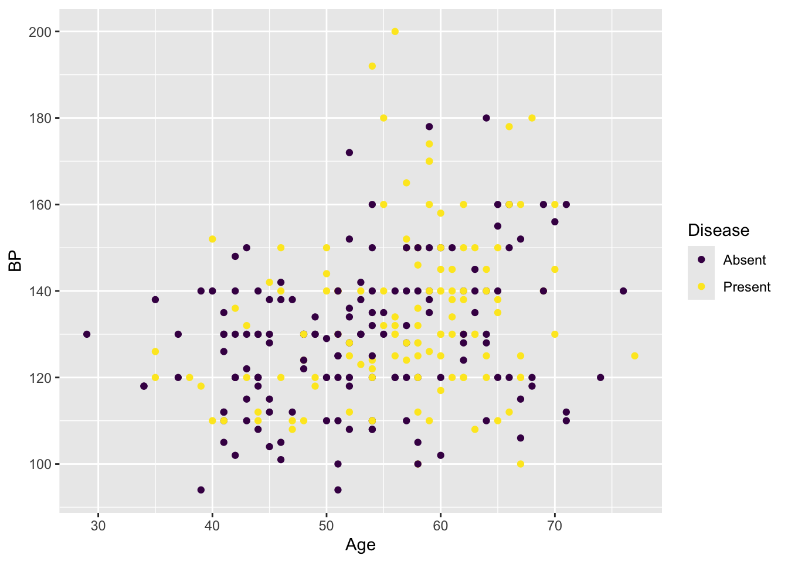
Our next optional component is facets. Facets can be used to split up the plot into smaller panels based on one or more variables. They are especially helpful when trying to visualize trends within multiple subsets at once. For example, in the plot below, facets allow us to compare the relationship between Age and BP for males to females. By coloring by Disease, we can see more males in the dataset have heart disease than females.
ggplot(heart, aes(x= Age, y=BP, color = Disease))+geom_point()+scale_color_viridis_d()+scale_y_continuous(n.breaks =6)+facet_wrap(~Gender)
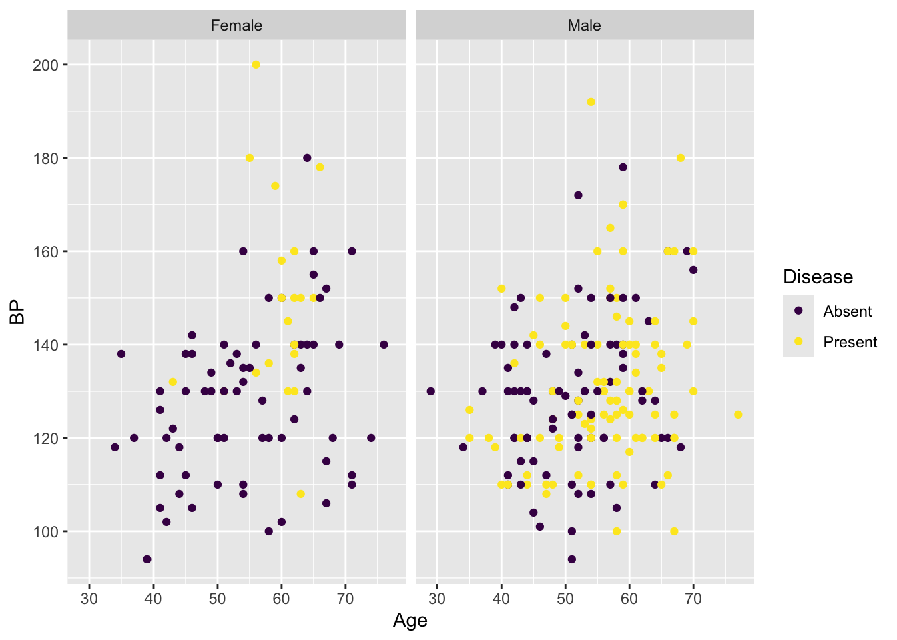
A third optional component is coordinates. The vast majority of the time, Cartesian coordinates are used, but certain data may be well-suited for polar or radial coordiates. Another useful coord_{} function is coord_fixed(). This can be used to display a plot with a fixed aspect ratio so that one unit has the same length in both the x and y directions. note: silly with current example.
Finally, there is the theme component, where all additional customizations related to the look of the plot are done. The theme can be used for additional customizations including changing the background color, removing the legend, changing the size of the text, and much more. ggplot2 offers a variety of pre-designed themes to choose from (theme_bw(), theme_classic(), and theme_minimal() are some of our personal favorites!), each of which can be further customized with the theme() function.
ggplot(heart, aes(x= Age, y=BP, color = Disease))+geom_point()+scale_color_viridis_d()+theme_bw()+theme(legend.position ="bottom")
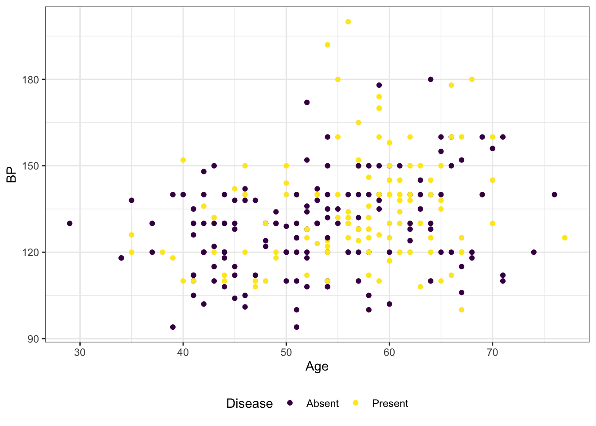
2.5.2 Types of visualizations
TODO: Flow chart/table of when to use different data visualizations. For now, this diagram in by Bin Yu and Rebecca Barter is a great resource.
2.5.3 Example
Let’s now go through an example of the EDA process using Lisa’s Vegetable Garden Data1. We will specifically explore Lisa’s planting and harvesting in 2020. We start by importing the data directly from Github.
Our first step in the EDA process is to understand how the data is structured. Let’s start with the planting_2020 dataset. A nice way to get a quick overview of our data is the glimpse() function.
We can see that planting_2020 includes seven variables and 93 observations. We appear to have four character variables (plot, vegetable, variety, and notes), one numeric variable (number_seeds_planted), one date variable (date), and one logical variable (number_seeds_exact). Below, we change plot, vegetable, and variety to factors. Typically, characters are for general-purpose text strings, while factors are for categorical data with a fixed set of predefined levels. In this case, plot, vegetable, and variety can only take a number of values—Lisa only has so many plots, and there are only so many types of vegetables and vegetable varieties. On the other hand, notes, which we notice is mostly missing, is a place for Lisa to write various notes if necessary. These notes can be anything, thus leaving it as a character is appropriate.
We have five variables and 781 observations, where each observation represents a harvest of a particular vegetable variety. Just like in planting_2020, we can convert vegetable and variety factors. units can be additionally treated as a factor—we’ll want to check and make sure all rows take the same units so that we can compare the weight across different observations.
Now that we understand what information is included in planting_2020 and harvest_2020, let’s create some univariate summaries and visualizations.
First, let’s start with checking for missingness in each variable. An easy way to do this is using the vis_miss() function from naniar package.
library(naniar)vis_miss(planting_2020)
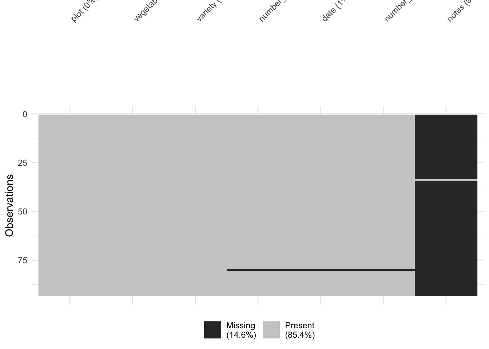
vis_miss(harvest_2020)
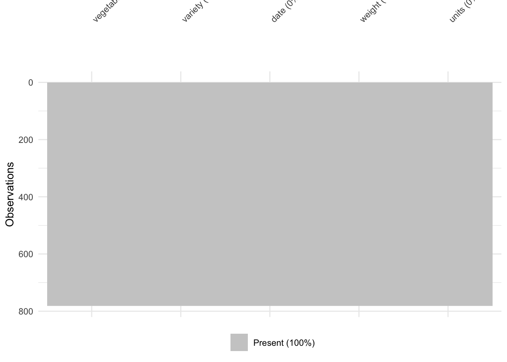
Above, we see there is no missingness in the harvest_2020 dataset. On the other hand, however, the note variable in planting_2020 is almost entirely missing. This makes sense as column is an optional place for Lisa to leave extra comments. We do, however, have one observation where Lisa did not record information about the number of seeds she planted or the date. Investigating further, we see this is for perennial strawberries.
# A tibble: 1 × 7
plot vegetable variety number_seeds_planted date number_seeds_exact
<fct> <fct> <fct> <dbl> <date> <lgl>
1 F strawberries perenni… NA NA NA
# ℹ 1 more variable: notes <chr>
Having looked at missigness, let’s start with some univariate summaries and visualizations of categorical variables. We can use count() with nrow() to check how many values each categorical variable takes. Using count() alone will tell us the number of observations of each level of our categorical factor variable.
Adding on nrow() tells us simply the number of levels. Below, we can see Lisa planted 31 different vegetables (wow!) with 65 unique varietes in 23 different plots.
planting_2020 %>%count(vegetable) %>%nrow()
[1] 31
planting_2020 %>%count(variety) %>%nrow()
[1] 65
planting_2020 %>%count(plot) %>%nrow()
[1] 23
We can use a bar chart to see how many times Lisa recorded a planting of each vegetable. Let’s arrange from most to least plotted vegetables, make the bars horizontal, and change the theme. We can see that Lisa recorded many plantings of tomatoes and squash—we’ll have to check later on if these were the vegetables she harvested the most!
planting_2020 %>%count(vegetable) %>%ggplot(aes(x= n , y =fct_reorder(vegetable, n)))+geom_col() +theme_bw()+labs(x="Number of plantings", y="")
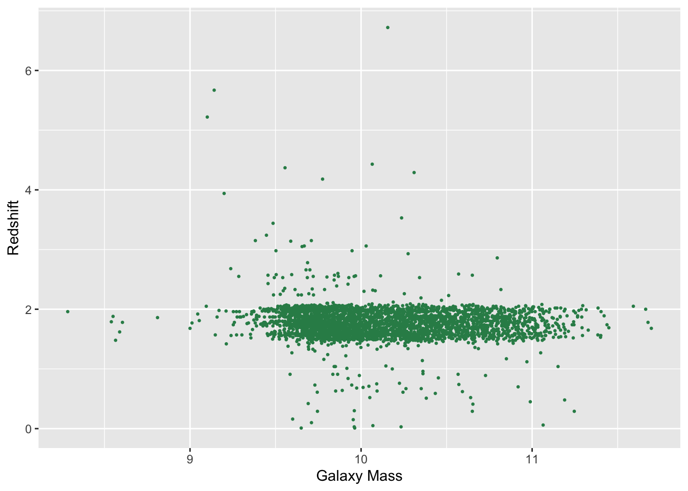
Now, let’s check out how many seeds Lisa was using in each recorded planting. Because seeds is a continuous variable, a histogram is appropriate here. Note the warning message: Warning: Removed 1 row containing non-finite outside the scale range (stat_bin()). This row represents the missing value that we previously identified.
planting_2020 %>%ggplot(aes(x=number_seeds_planted))+geom_histogram(binwidth =5)+theme_bw()+labs(x="Number of seeds planted")
Warning: Removed 1 row containing non-finite outside the scale range
(`stat_bin()`).
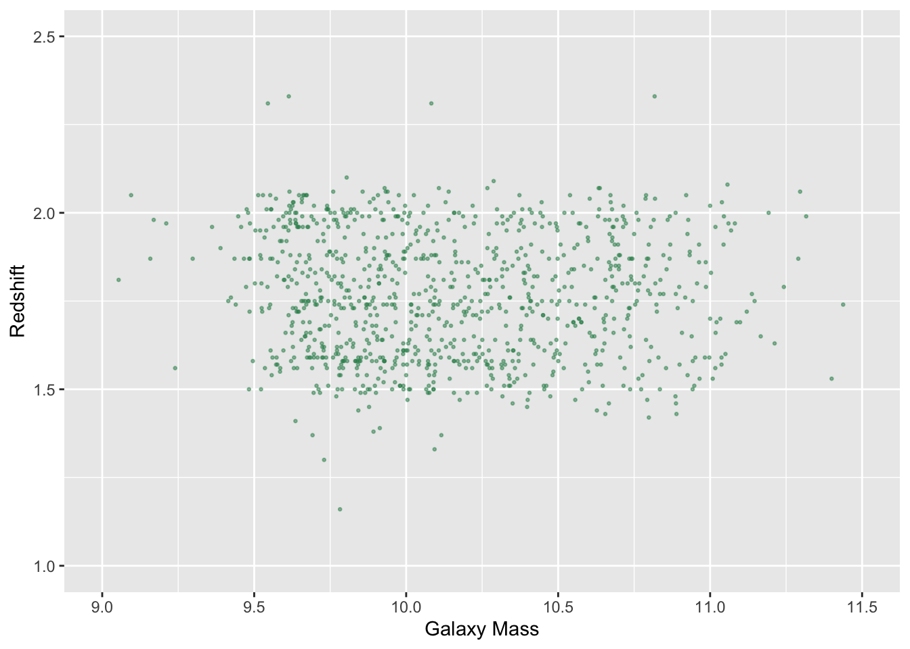
Above, we set the binwidth to five, meaning each vertical bar represents a five wide range of seeds planted (e.g. 1-5 seeds, 6-10 seeds, etc). It appears that most often Lisa is planting between 1-15 seeds, with the distribution being right skewed. For a couple of plantings, Lisa planted roughly 100 and 200 seeds, which are visual outliers. Checking these observations out, we see they are lettuce and spinach plantings, and number_seeds_exact tells us that the number of seeds planted in both cases was an estimate.
planting_2020 %>%filter(number_seeds_planted >90)
# A tibble: 2 × 7
plot vegetable variety number_seeds_planted date number_seeds_exact
<fct> <fct> <fct> <dbl> <date> <lgl>
1 E spinach Catalina 100 2020-06-20 FALSE
2 G lettuce Lettuce Mi… 200 2020-06-20 FALSE
# ℹ 1 more variable: notes <chr>
Let’s also do some univariete EDA of harvest_2020. First, let’s see how many harvests Lisa made each month in 2020. To do this, we will use the month() function from the lubridate R package. Below, we see that harvest season is from June through October, with Lisa making almost 300 harvests in August.
Finally, let’s check out the distribution of the weight of these harvests. We first confirm that all harvests are weighed in grams.
unique(harvest_2020$units)
[1] grams
Levels: grams
Using a density plot, below we find that the distribution of harvest weights is heavily right skewed. While most vegetable harvests are under 1000 g, it appears Lisa had at least one harvest over 7000 g. A good next step will be to understand what vegetables have particularly heavy or light harvests. This brings us to the final step of our EDA process, exploring relationships between variables.
Let’s continue with the harvest_2020 dataset to start, specifically with our question about understanding harvest weight by vegetable. In particular, let’s first identify the vegetables with the smallest and largest average harvest weight.
It makes sense that leafy vegetables (e.g. cilantro, basil, spinach) have low average harvest weights while bigger vegetables (e.g. squash, pumpkins) have a heavy average harvest weight.
It may also be interesting to explore there relationship between number of seeds planted and harvest weight. To do so, let’s create two dataframes: vegetable_seeds, representing the number of seeds Lisa planted for each vegetable variety, and harvest_weights, representing the total weight of each vegetable variety that Lisa harvested. Along the way, we correct a couple spelling mistakes in order to obtain properly joined rows2. We also replace missing values with zero. This represents situations where Lisa harvested without planting any seeds (e.g. perennial plants) or planted seeds but the plant did not produce any crops.
We can now create a scatterplot with number of seeds planted on the x-axis and harvest weight on the y-axis. The scatterplot displays a weak, negative relationship between total seeds planted and harvest weight. Interestingly, for several plants (Romanesco zucchini, saved pumpkins, Amish Paste tomatoes, Volunteers tomatoes), Lisa planted under only a few seeds but harvested over fifty pounds of each vegetable variety. On the other hand, for a few different lettuce and carrot varieties, Lisa planted (or estimated that she planted) over one hundred seeds, but harvested under ten pounds of each vegetable variety.
There are so many more questions to explore with this dataset, and we encourage you to continue to investigate what interests you! The plots we have created so far are a good start to get an overview of the datasets, but it is important to tailor further EDA to your specific research question.
2.6 Anomaly Detection
An anomaly, or outlier, is for our purposes a data point that lies far from other data. (Note that statisticians have a more precise definition for “outliers” - they are specific data points with response variable values that are extreme relative to the pattern exhibited by the rest of the data - but the word is often used colloquially to denote any datum that lies far from the rest of the data.) An anomaly is an anomaly because we can not model it effectively. A statistical model is a representation of the data-generating process, and anomalies are values that we will not naturally observe, given our understanding of the process.
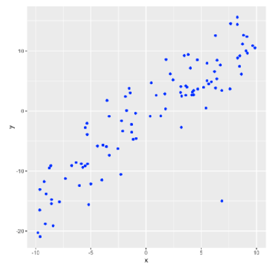
The single point to the lower right is an anomaly! Note that while it may be useful or necessary to determine how anomalous data points are generated, that’s not our concern here: we simply want to detect possibly anomalous points. Given the picture above, it appears easy, but…imagine again that we are “line-landers”: we exist and see in one dimension only, and thus can only examine the data above in projection. In that case, you would not see the anomalous point at all! By the same token, we who exist and see in three dimensions might not see anomalies present in higher-dimensional data. We should always visualize the data…but visualization on its own will not guarantee that we will detect anomalous data points.
Let’s say we examine the values for each column of our structured dataset separately. How might we detect anomalies?
The empirical approach: we, e.g., create a histogram or boxplot and look to see if there are data that lie far from other data, where “far” is a judgement call. Are the data points plausible given the apparent distribution of the (vast) majority of the data? (Or do they have strange values that might indicate misrecording or missingness?) Implementing this approach is fine so long as we explicitly record what data points we deem to be outliers (and remove from the dataset); that way, others can replicate our processing and possibly change it (if necessary).
However, perhaps we want to establish a quantitative rule for excluding data from further analysis. How might we do this?
Via box plots: look for data beyond the whiskers. However, see below!
Via Dixon’s Q Test, or Grubbs’ Test, or the Tietjen-Moore Test, or the generalized extreme studentized deviate test, if the data are normally distributed. See, e.g., this web page for more details. However, data are often not normally distributed!
A box plot, by default, determines the interquartile range of the data (i.e., the distance between the values corresponding to the 25th and 75th percentiles of the data), and then decrees that any data that lies more than 1.5 \(\times\) IQR below the 25th percentile value, or above the 75th percentile data, are anomalous data.
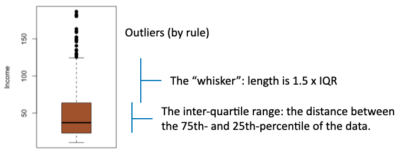
The problem with relying on this default approach is that it is sensitive to the sample size. For normally distributed data, the probability that a datum will lie beyond the whiskers is 0.007. This is a small value…but if we have 10,000 data, we will observe approximately 70 data that are “anomalous by rule” but are not actually anomalous. We would need to be careful to manually adjust the lengths of the whiskers if our sample sizes are large…or we can fall back on the empirical approach.
A means by which to extend anomaly detection to the native space of high-dimensional data is to utilize pairwise distance (or similarity) measures. Let’s assume that data table whose (quanitative) values on rows \(i\) and \(j\) are \(\mathbf{x}_i = \{x_{i,1},\ldots,x_{i,p}\}\) and \(\mathbf{x}_j = \{x_{j,1},\ldots,x_{j,p}\}\), respectively. Then the Euclidean distance between objects \(i\) and \(j\) is \[
D_{ij} = \sqrt{(x_{i,1}-x_{j,1})^2 + \cdots + (x_{i,p}-x_{j,p})^2} \,.
\] For each object, we can determine, e.g., the minimum distance to its nearest neighbor, and histogram those values: a anomalous datum might appear as a data point with an extremely large “minimum distance” value. (Note that, e.g., there are efficient methods in R and Python for generating the full ensemble of pairwise distances and storing them in an \(n \times n\) symmetric matrix (which zeros along the diagonal), but beware: the memory required to store a matrix is such that these methods are only really applicable if the number of rows is \(\lesssim\) 20,000.)
A caveat for computing pairwise Euclidean distances is that they might not be the optimal distance measures. For instance, the ranges of each variable might be such that some variables “dominate” over others in a distance measurement: e.g., if a variable has units kilometers, and we change the units to millimeters, its relative contribution to the Euclidean distance will greatly increase!
One often used alternative approach to computing the Euclidean distance is to compute the Mahalanobis distance: \[
D_i = \sqrt{(\mathbf{x}_i-\bar{\mathbf{x}})^T \Sigma^{-1} (\mathbf{x}_i-\bar{\mathbf{x}})} \,,
\] where \(\mathbf{x}_i\) represents a single row of the data table and \(\bar{\mathbf{x}}\) represents the average values in each column, and where \(\Sigma^{-1}\) is the inverse of the covariance matrix. This last term helps mitigate differences in scale from variable to variable. \(D_i\) is not a pairwise distance but rather the distance from the global average point in the \(p\)-dimensional space of the data. We can histogram the distance values: an outlier might appear as a data point that lies anomalously far from the global average point.
We conclude by mentioning two other anomaly-detection algorithms:
Local Outlier Factor (LOF): this algorithm compares the local density of data around a given data point to the local densities of its nearest neighbors, with points that have substantially lower densities than their neighbors being potential outliers.
Isolation Forest: as will become apparent later, this algorithm is similar to that for a classification and regression tree, but with the data in the \(p\)-dimensional space between repeatedly partitioned randomly. Data that require, on average, fewer random partitions to become completely isolated are potential anomalies.
As a final note, regardless of what quantitative approach we take, we need to explicitly record what data points we deem to be anomalous (and remove from the dataset)! We always record our choices, to ensure our analyses are reproducible.
One goal of EDA is to perform anomaly detection, i.e., to find possible outlying values in the data
we will assume that we will detect anomalous values “by eye,” using the qualitative criterion that data that lie “far from the core” of any histogram cannot be plausibly generated by the same mechanisms that generated the rest of the data
be sure to record any removal of apparent anomalous values so that others can reproduce your analyses later!
Here, I will remove rows of data with values of A less than \(-0.5\) and values of z.mode greater than 3.5. I can do that using the dplyr function filter():
Do not use the “1.5 IQR rule” for determining whether a datum is anomalously valued
This rule is far too conservative to use when the sample size is (moderately) large
if we have \(n = 100\) normally distributed data, the rule will on average identify 0.7 valid data as being anomalous
if we have \(n = 10000\) data, 70 valid data, on average, will be flagged as anomalous
etc.
2.7 Optional: Data Reduction via Principal Components Analysis
Let’s build up intuition for PCA by starting off with a picture:
At left, we visualize the contents of a data frame with six rows (six data points) and two columns, \(x_1\) and \(x_2\)
What does the PCA algorithm do? It utilizes algorithms of linear algebra to move the coordinate system origin to the centroid of the point “cloud,” then rotates the axes such that “PC 1” lays along the direction of greatest variation (i.e., along the points), and “PC 2” lays orthogonal to to “PC 1”
In the end, PCA is the linear transformation of a coordinate system…
…but, there is actually more to PCA then just the transformation.
At right, we move into “PC space,” where PC1 has become the \(x\) axis, etc.
Note how the data all lie along the PC1 axis
in PC space, we can see that the true space of the data is one-dimensional: a second dimension adds no statistical information at all
we can visualize and interpret the data using, e.g., a histogram of PC1 values and ignore PC2 entirely
So in the end, PCA is also a dimension-reduction tool
2.7.1 Why Use PCA?
There are two principal (pun not intended) reasons to use PCA:
it can assist data visualization: if the predictor data lay within a subspace of the native space, we can try to visualize the data in that space
it can help statistical inference: PCA “decorrelates” the data \(-\) there is no linear association between the data along PC1 and PC2, etc. \(-\) so multicollinearity is mitigated!
NOTE:PCA is not appropriate for use with categorical data!
2.7.2 It’s a Linear Algorithm
The main limitation of PCA is that it is a linear algorithm: it projects data to hyperplanes
These data lay on a curving two-dimensional strip embedded in a three-dimensional space
projecting these data to a two-dimensional plane or a one-dimensional line would effectively randomize the statistical information they contain
for visualization and/or learning, we could explore the use of nonlinear techniques like diffusion map or local linear embedding, or self-organizing maps or tSNE, etc.
2.7.3 It’s Not Factor Analysis
PCA is one of a family of related algorithms commonly dubbed factor analyses, and, for instance, some use the phrases “PCA” and “factor analysis” interchangeably
The PCA algorithm as described here is a deterministic algorithm: it just ingests the data values as they are and produces a result, full stop
Exploratory factor analysis is a variant of PCA which does attempt to take the random variability of the data into account
it maps the \(p\) observed variables to \(k < p\) factors; “exploratory” means we do not know a priori how that mapping may occur
Confirmatory factor analysis basically adds on a hypothesis-testing layer to EFA for confirming that links actually exist between the \(k\) factors uncovered by EFA and the \(p\) original variables
2.7.4 Algorithm
The score, or the coordinate of the \(i^{\rm th}\) observation along PC \(j\) is \[Z_{ij} = \sum_{k=1}^p X_{ik} \phi_{kj}\]
\(k\) represents the \(k^{\rm th}\) variable or feature (i.e., the \(k^{\rm th}\) column of your [predictor] data frame)
\(\phi\) is the rotation (or loading) matrix, which is normalized such that \(\sum_{k=1}^p \phi_{kj}^2 = 1\)
Note that since we are “mixing axes” when doing PCA, it is generally best to standardize (or scale) the data frame before applying the algorithm
2.7.5 Choosing the Number of Dimensions to Retain
Ideally, we choose \(M < p\) such that \[x_{ij} = \sum_{m=1}^p z_{im}\phi_{jm} \approx \sum_{m=1}^M z_{im}\phi_{jm}\]
in other words, we don’t lose much ability to reconstruct the input data \(X\) by dropping the last \(p-M\) principal components, which we assume represent random variation in the data (i.e., noise)
One convention is to sum up the amount of variance explained in the first \(M\) PCs, and adopt the smallest value of \(M\) such that 90% or 95% or 99%, etc., of the overall variance is “explained”
Another convention is to look for an “elbow” in the left plot below (the “scree plot”)
2.7.6 Example
Let’s suppose we have a catalog of galaxies that contains measures of brightness in different wavelength bands, from u (for ultraviolet) to z and y in the near-infrared
The six brightness metrics are obviously highly correlated!
pca.out <-prcomp(df[,-7],scale=TRUE) # do not include response variable!v <- pca.out$sdev^2round(cumsum(v/sum(v)),3)
[1] 0.977 0.998 0.999 1.000 1.000 1.000
The first principal component explains 97.7% of the variance in the dataset: the data can safely be transformed from a six-dimensional space to a one-dimensional one with minimal loss of statistical information
Let’s print the column(s) for the PCs that we retain:
round(pca.out$rotation[,1],3)
u g r i z y
0.396 0.411 0.413 0.412 0.410 0.408
Here, we see that all the original variables contribute almost equally to the first PC (sign doesn’t matter)
we conclude that the predictor variables (for all intents and purposes) lie along a one-dimensional line in the native six-dimensional space, and that the orientation of the line is such that it spans all six of the original predictor variable axes
What information is in the second PC?
round(pca.out$rotation[,1:2],3)
PC1 PC2
u 0.396 0.793
g 0.411 0.247
r 0.413 -0.089
i 0.412 -0.205
z 0.410 -0.320
y 0.408 -0.398
The second PC primarily maps to u-band magnitude…basically, the PC2 vector, orthogonal to the PC1 vector, points largely along the u-band axis, meaning there is some data variability along that axis that PC1 does not “pick up”
2.7.7 PC Regression
TBD: move to extensions to linear regression chapter
Let’s demonstrate how we would learn a principal components regression model using the distance of a galaxy from the Sun as a response variable
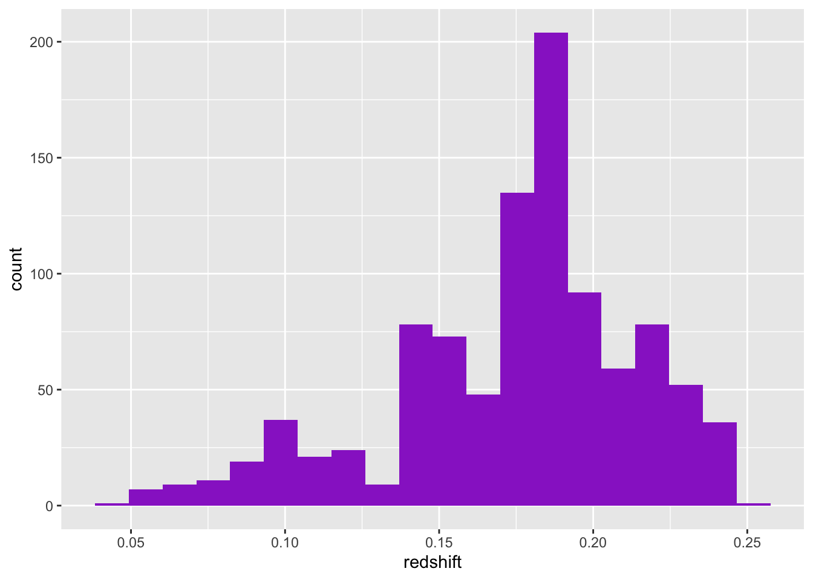
Reminder: why are we doing this?
to mitigate multicollinearity
so we can “trust” the standard error estimates output in the summary
The test-set MSE increases: there can be/will be a tradeoff between enhanced model interpretability and decreased model predictive ability if we summarily remove PCs
PC regression learns models with “shifted” predictor variable values: with sufficient sample size, this can markedly impact prediction results, even if the retained PCs represent an overwhelming proportion of the cumulative variance
We see if we change, e.g., PC2 by 1 unit, the distance will change by 0.024…but how does that change map back to the original variables?
so while it can be worthwhile to shift to PC coordinates to mitigate multicollinearity, crafting an inferential data story that refers back to the original variables can be difficult (and this would be the reason why we wouldn’t “just do” PC regression all the time!)
Note: this data was shared as a TidyTuesday dataset! TidyTuesday is organized by the Data Science Learning Community is a weekly social data project. Its over-arching goal is to provide real-world datasets so that people can learn to work with data. If you are looking to improve your data visualization skills, the TidyTuesday datasets provide a wonderful opportunity to get your hands dirty! We also recommmend searching the hashtag #TidyTuesday on social media platforms (e.g. Bluesky) to gain inspiration and see what visualizations others have produced for the most recent TidyTuesday datasets. Oftentimes, participants share a link to their code, which can be helpful for learning cool data visualization tips and tricks!↩︎
When joining data, it’s always a good idea to check what rows didn’t match and why that is.↩︎